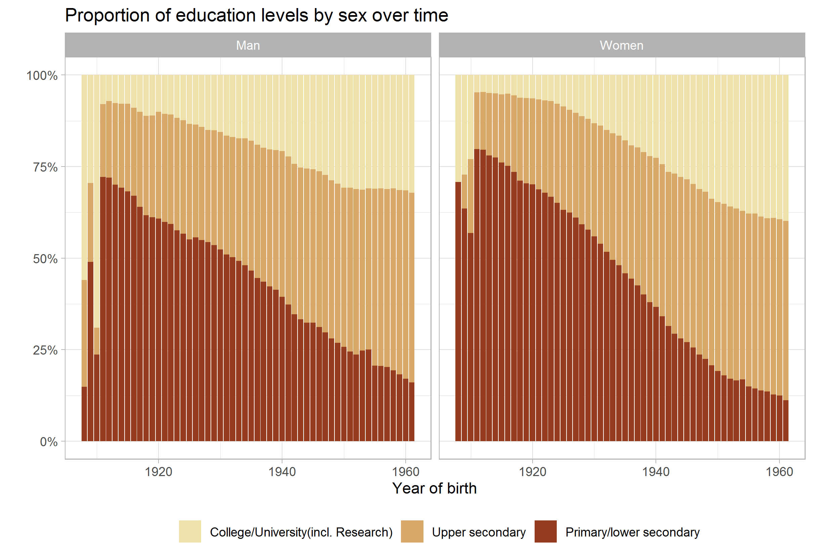
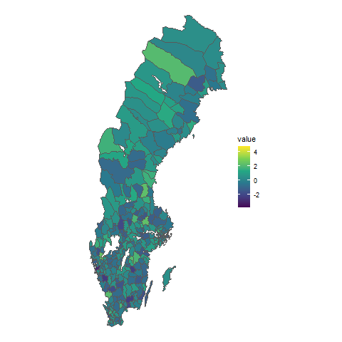
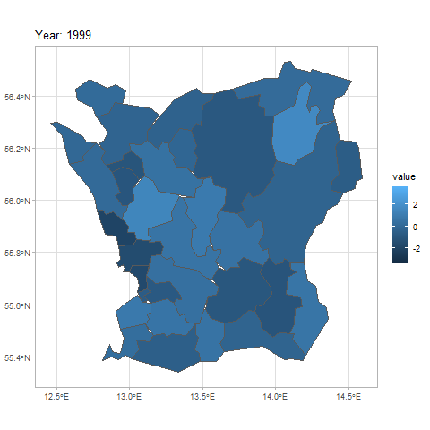
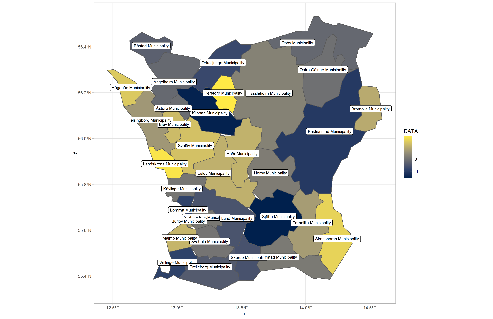

Reloc-Age
1
About
1.1
Research questions
2
Overview of Registers and Data
2.1
Description of data sets from SCB
2.1.1
Dataset overview
2.1.2
Data cleaning and joining of raw data
3
Exploring data - Individuals
3.1
Map testing
4
ICD codes.
4.1
ICD Code types
4.2
Decoding the codes - matching
4.3
Data cleaning process
5
Exploring data - Housing
5.1
Descriptive statistics
5.2
Specific data considerations
5.2.1
Translating types of housing and tenure
5.2.2
Identifying partners
5.2.3
Recoding varaibles
5.2.4
Identifying relocations
5.2.5
Identifying change in kommun
Reloc-Age
3
Exploring data - Individuals

3.1
Map testing


